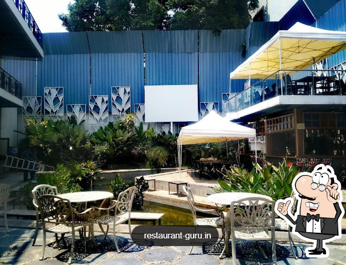

Elephant camps (or elephant care and training centers) are dedicated facilities where captive elephants reside under the care of forest departments or conservation trusts. Popular mainly in South India (like Karnataka and Tamil Nadu), they offer visitors a chance to watch, learn about, and ethically interact with these majestic animals.

Food delivery is an important benefit of The Watering Hole BTM Layout. The patient staff shows a high level of quality at this place. Terrific service is something visitors appreciate here. Clients of this spot state that they found prices average. The spectacular decor and charming ambiance let guests feel relaxed here. Google users who visited this bar state that the most suitable score is4.2